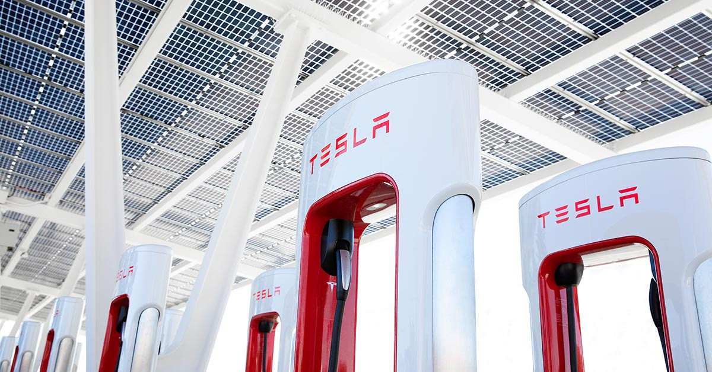
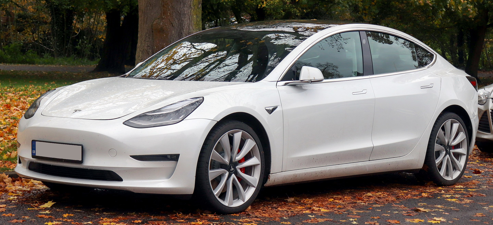

In 2008, the Tesla Roadster entered production. That was one of the key events that sparked interest in Tesla,
and is why data available for its stock health and growth is available 2010 and onward. Musk took over as CEO
in October of 2008. Under his leadership, in 2011 the Model S prototype was revealed. Its successful release
in 2012, alongside Tesla's supercharger infrastructure being started in California, allowed for it to turn its
first profits in 2013, which can be seen in its significant stock increase during that time period.

Below we can see Teslas stock growth over its start in the early 2010's to the present day.
Tesla diversified over the 2010s, getting involved in the solar market as well as producing at a mass consumer
level with the Model 3.

In the next slides, we will discuss further Tesla's highly successful early 2020s.